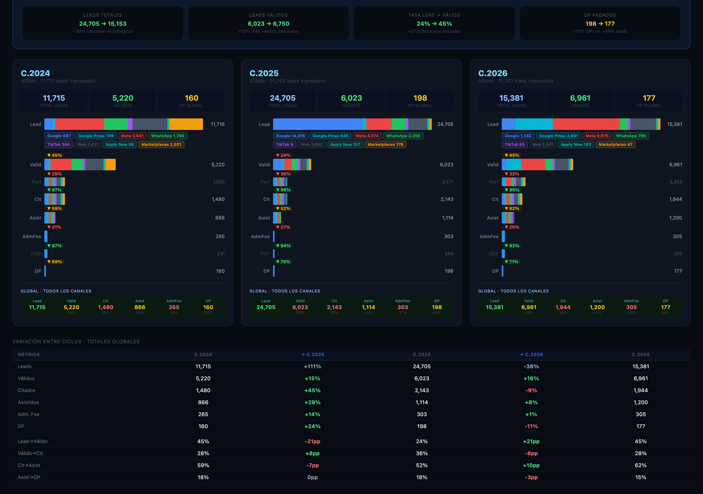

Arkansas State University · Texas State University · Ciclos C.2024 – C.2026
Fecha de corte
24 jun 2026
Documentos del análisis

01 · Volumen
Funneles por Ciclo
Muestra cuántos leads entraron y cuántos llegaron a cada etapa del funnel (Válido, Perfilado, Citado, Asistido, DP) para cada canal y ciclo. Útil para ver dónde se pierde más volumen y cómo evoluciona de un ciclo a otro.
Gráfica de evolución del Costo Por Lead en cada etapa para C.2024, C.2025 y C.2026. Incluye selector de canal para ver el CPL de Google, Meta o WhatsApp por separado. Las tarjetas de abajo destacan dónde bajó el CPL en verde.
Ranking de eficiencia por canal considerando todo el funnel: mapa de calor (verde = más barato, rojo = más caro), CPL promedio, y tasa de conversión Lead a DP. Filtra por año (C.2025, C.2026 o promedio total) y cambia de vista según lo que necesites.
Dimensiona los leads perdidos contra el total, por etapa del funnel, mes de pérdida y motivo registrado en Salesforce. Filtrable por grupo de origen (Digital, Orgánico, Prospección, Deportes), universidad y ciclo (Fall + Spring).
Compara el mismo indicador año contra año: conversión por etapa, % de pérdida, pérdidas mes a mes, hitos de fondo de embudo y mix de motivos. Filtrable por universidad y grupo de origen.
La campaña "EKN - Click to WhatsApp - Generic y Brand" no popula el campo Facebook Campaign Name en Salesforce. Los leads se identificaron cruzando: (1) Origen del Prospecto / utm_source con "WhatsApp" o "CA_Facebook_Whatsapp", y (2) utm_id que contenga "genjo". Leads corregidos: 568 → 796 AState / 175 → 234 TxState.
✅ Regla fija
Fuente de datos — regla de oro
Leads: siempre desde Salesforce. Los panoramas de Datorama solo se usan para la inversión por canal. No mezclar: Datorama puede mostrar leads de sesión, no leads cualificados de SF. El CPL = inversión Datorama ÷ leads Salesforce.
📌 Filtros BDD
Filtros por universidad — C.2026
AState C.2026: filtro Mkt Digital (no "All Digital"). TxState C.2026: filtro OC (Origen Conjunto).
C.2026 = Fall 2026 + Spring 2026 (ago 2025 – jun 2026). Corte: 24 jun 2026. Los leads se cuentan con stage_date ≤ fecha de corte.
⚠️ Dato incompleto
Datorama Diciembre 2025
Los archivos de diciembre están incompletos en Datorama: AState muestra solo $1,885 MXN y TxState $5,104 MXN — claramente parciales. Para diciembre se usan los valores del v4.xlsx como fuente autoritativa.
⚠️ Ajuste de inversión
Google AState en v4 — fee de agencia
La inversión de Google en el panorama v4 para AState ya incluye el fee de agencia (~41-47%) sobre el costo puro de media de Datorama. Al comparar contra otros canales, considerar que Google tiene este costo adicional estructural.
✅ Corregido — Inversión WA/Meta separada para ambas universidades
Inversión WA vs Meta — TxState y AState C.2026 recalculada desde Datorama
Los archivos mensuales de Datorama (tx_oct/nov/dic_25.xlsx y ak_oct/nov/dic_25.xlsx) contienen la campaña "FB Clicks to WhatsApp" como línea separada con costo granular. Ene–May 2026 viene del archivo consolidado TX_Data / AK_Data por Plataforma por dia.xlsx.
TxState WA C.2026: $741,976 MXN total → CPL/Lead $3,171. Solo 1 DP (muestra pequeña). AState WA C.2026: $1,423,226 MXN total → CPL/Lead $1,788 · CPL/DP $65k (mejor canal del ciclo).
Los CPLs previos usaban inversiones aproximadas del panorama v4 donde Meta+WA estaban combinados. Los valores en los documentos reflejan ya la corrección.
1
Confirmar filtro TxState C.2025 con Power BI Pendiente
TxState C.2025 puede tener un filtro OC (~2,467 leads) o Mkt Digital (~2,442 leads). La diferencia es pequeña pero afecta los CPL. Validar contra el reporte de PBI antes de cerrar la planeación.
2
Pulir atribución WhatsApp en Salesforce C.2027
Coordinar con Ely / Genjo para que la campaña "EKN - Click to WhatsApp" popule correctamente el campo Facebook Campaign Name en SF. Actualmente hay que hacer el cruce manual por utm_id=genjo, lo cual es frágil si cambia el naming.
3
Actualizar datos al cierre de C.2026 Ago 2026
El corte actual es 31 mayo 2026. Al cierre del ciclo (agosto 2026), actualizar los leads finales de Salesforce y la inversión completa de Datorama, incluyendo diciembre 2025 cuando estén los archivos completos.
4
Extender análisis a TxState C.2024 Opcional
Los datos históricos de TxState C.2024 no están en el análisis actual por falta de Datorama de ese ciclo. Si se consiguen los panoramas de inversión, se puede completar la serie histórica para tener tres ciclos comparables en TxState.
C.2026 ya tiene inversiones separadas desde archivos Datorama (tx_oct/nov/dic_25 + consolidado). Para C.2025 de TxState aún no hay archivos mensuales con desglose WA/Meta en OneDrive — solicitar al equipo de medios o a la agencia el reporte de Meta Ads Manager filtrado por tipo de objetivo (Messages vs Website).